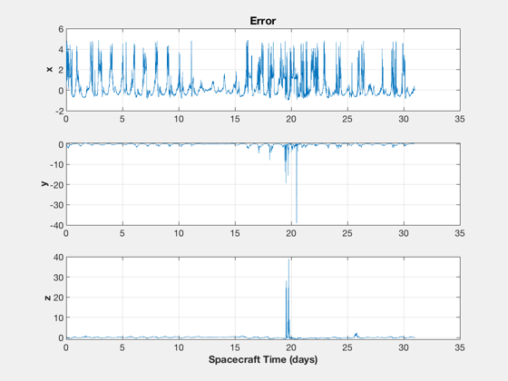
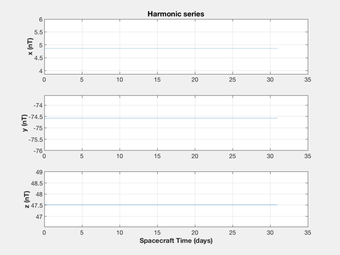
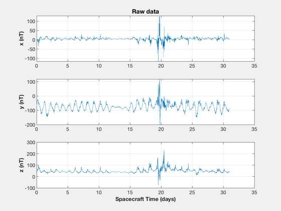
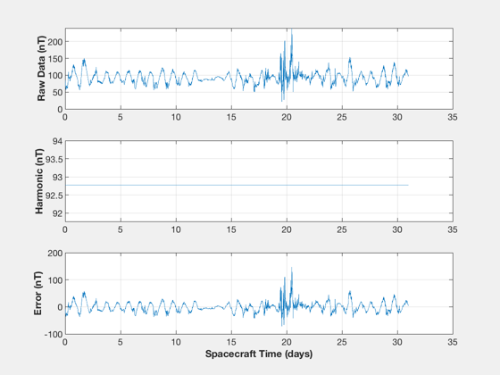
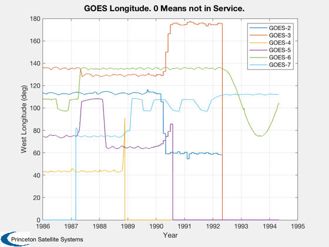
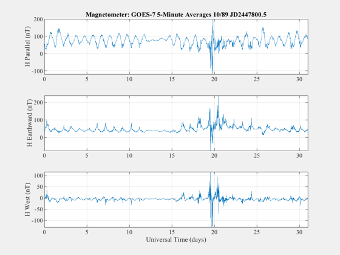
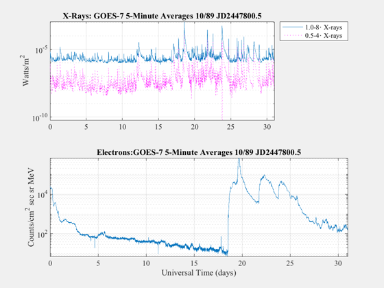
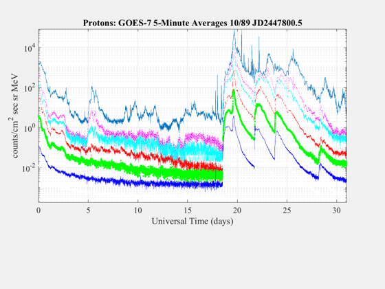
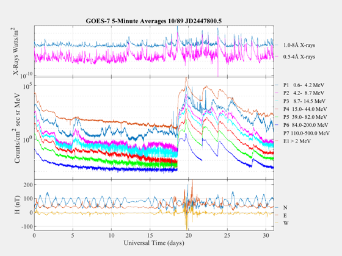

Contents
Demonstrates the GOES Toolbox functions.
The GOES data is primarily useful (in this toolbox) for
magnetic field data at geosyncrhonous orbit which is needed for
testing magnetic control systems. The toolbox provides some GOES data
but it is now available on the web. When this was originally written
the data was only available on CD.
Magnetic field harmonics
BHarm( [],[],'G0758910.BIN;1' );
   
Load satellite positions
LoadSatP( 'SATPOS.TXT;1' );

Load and display a GOES file
LoadGOES( 'UT','G0758910.BIN;1' );
  
Show the standard GOES weather plot
Weather('UT','G0758910.BIN;1');

Get ordering information for the CD
GOESCD
------------------------------------
To order the GOES CD-ROM contact:
National Geophysical Data Center
Code E/GC2
325 Broadway
Boulder, CO 80303-3328
Telephone: (303) 497-6761
FAX: (303) 497-6513
Internet: info@mail.ngdc.noaa.gov
------------------------------------